34. Using Push 1
Ableton Push 1 is an instrument for song creation that provides hands-on control of melody and harmony, beats, sounds, and song structure. In the studio, Push 1 allows you to quickly create clips that populate Live’s Session View as you work entirely from the hardware. On stage, Push 1 serves as a powerful instrument for clip launching.
Push 1’s controls are divided into a number of sections, as shown in the diagram below.
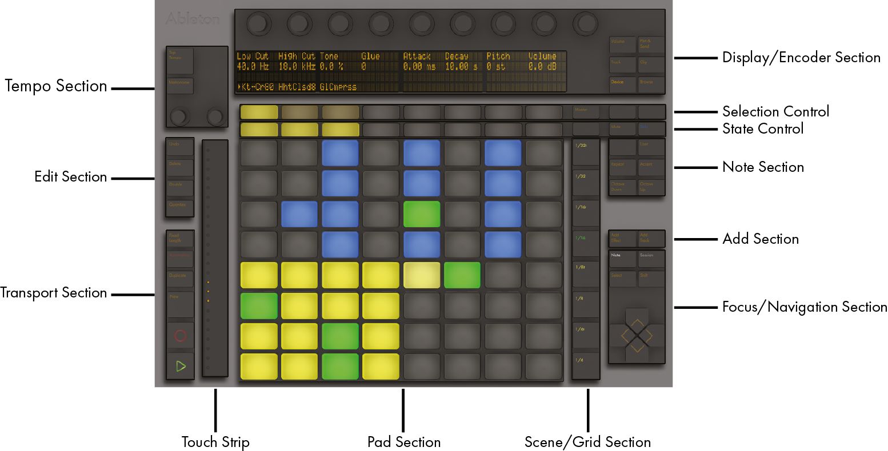
Much of Push 1’s behavior depends on which mode it is in, as well as on which type of track is selected. To help you learn how to work with Push 1, this chapter will walk you through some of the fundamental workflows, and then will provide a reference of all of Push 1’s controls.
There are also a number of videos that will help you get started with Push 1. These are available at https://www.ableton.com/learn-push/
34.1 Setup
Setting up the Push 1 hardware is mostly automatic. As long as Live is running, Push 1 will be automatically detected as soon as it is connected to a USB port on your computer. After connection, Push 1 can be used immediately. It is not necessary to install drivers and Push 1 does not need to be manually configured in Live’s Settings.
34.2 Browsing and Loading Sounds
You can browse and load sounds directly from Push 1, without needing to use Live’s browser. This is done in Push 1’s Browse Mode.
Press Push 1’s Browse button:
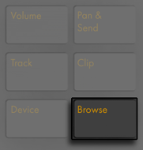
In Browse Mode, the display shows all of your available sounds and effects, as well as locations from the Places section of Live’s browser. The display is divided into columns. The far left column shows either the specific type of device being browsed or the Places label. Each column to the right shows the next subfolder (if any exist). Use the In and Out buttons to shift the display to the right or left, allowing you to browse deeper levels of subfolders or view a larger number of presets on the display.
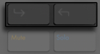
Navigate up via the Selection Control button (the first row below the display) in each column. Navigate down one folder via the State Control button for each level (the second row below the display). Samples and presets from official Packs or Live’s Core Library will preview when selected in the browser. To load a device preset, press the green button on the right. To load the default preset of the selected device, press the green button on the left.
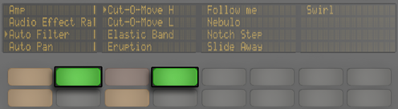
You can scroll quickly through folders and subfolders via the encoders. Holding Shift while pressing the up or down buttons will move by a whole page.
After pressing a device or preset load button, the button will turn amber. This indicates that the currently selected entry is loaded; if you navigate to a different entry, the button will turn green again. Pressing an amber load button will load the next entry in the list, allowing you to quickly try out presets or devices.
What you see when in Browse Mode depends on the device that was last selected. If you were working with an instrument, Browse Mode will show you replacement instruments. If you were working with an effect, you will see effects. When starting with an empty MIDI track, the display shows all of your available sounds, instruments, drum kits, effects, and Max for Live device, as well as VST and Audio Units plug-ins. Folders are only visible on Push 1 if they contain items that can be loaded at any particular time. For example, the Samples label (as well as any of your own folders in Places that only contain samples) won’t be visible unless you’re browsing from a single pad in a Drum Rack.
34.3 Playing and Programming Beats
To create beats using Push 1, first make sure Note Mode is enabled.
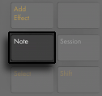
Then use Browse Mode to load one of the Drum Rack presets from Live’s library.
When working with a MIDI track containing a Drum Rack, Push 1’s 8x8 pad grid can be configured in a few different ways, depending on the state of the Note button. Pressing this button cycles between three different modes.
34.3.1 Loop Selector
When the Loop Selector layout is enabled, the pads are divided into three sections, allowing you to simultaneously play, step sequence and adjust the length of your clip.
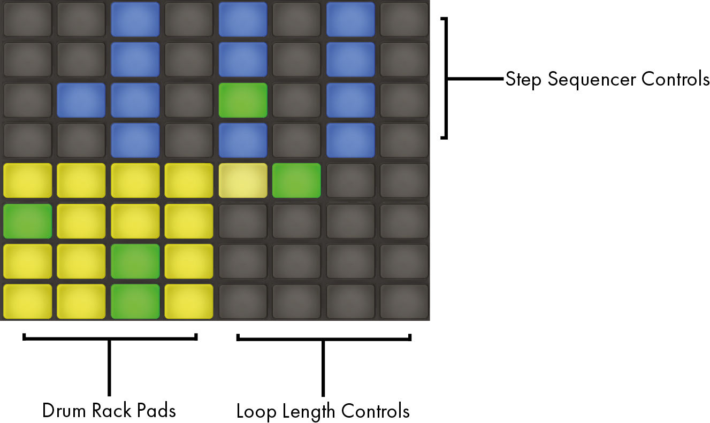
The 16 Drum Rack pads are laid out, like Live’s Drum Rack, in the classic 4x4 arrangement, allowing for real-time playing. The Drum Rack pad colors indicate the following:
- Bright yellow — this pad contains a sound.
- Dull yellow — this pad is empty.
- Green — this pad is currently-playing.
- Light Blue — this pad is selected.
- Dark blue — this pad is soloed.
- Orange— this pad is muted.
When working with Drum Racks that contain a larger number of pads, use Push 1’s touch strip or the Octave Up and Octave Down keys to move up/down by 16 pads. Hold Shift while using the touch strip or Octave keys to move by single rows.
Holding the Note button gives you momentary access to the 16 Velocities layout. You can also lock the alternate layout in place by holding Shift and pressing the Note button. To unlock the 16 Velocities layout, press the Note button again.
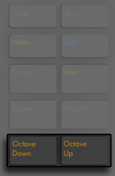
34.3.2 16 Velocities Mode
Press the Layout button to switch to the 16 Velocities layout. In this mode, the bottom right 16 pads represent 16 different velocities for the selected Drum Rack pad. Tap one of the velocity pads to enter steps at that velocity.
Holding the Note button gives you momentary access to the loop length controls. You can also lock the loop length controls in place by holding Shift and pressing the Note button. To unlock the loop length pads, press the Note button again.
34.3.3 64-Pad Mode
In addition to the Loop Selector and 16 Velocities layouts, you can also use the entire 8x8 pad grid for real-time drum playing. This is useful when working with very large drum kits, such as those created by slicing. To toggle to 64-pad mode, press the Note Mode button a second time. Pressing Note again will then toggle back to the Loop Selector layout, allowing you to quickly get back to step sequencing. The pad colors in 64-pad mode are the same as those used in the three-section layout.
When moving back and forth between the three layouts, the 16 pads available for step sequencing will not change automatically. You may still need to use the touch strip or Octave keys in order to see the specific 16 pads you want.
Holding the Note button gives you momentary access to the loop length controls. You can also lock the loop length controls in place by holding Shift and pressing the Note button. To unlock the loop length pads, press the Note button again.
34.3.4 Loading Individual Drums
Browse Mode can also be used to load or replace individual pads within a loaded Drum Rack. To switch between browsing Drum Racks and single pads, press the Device button to show the devices on the track.
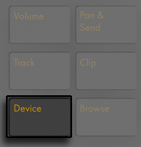
By default, the Drum Rack is selected, as indicated by the arrow in the display. To select an individual pad instead, tap that pad, then press the selection button below the pad’s name.
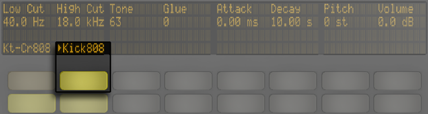
Now, entering Browse Mode again will allow you to load or replace the sound of only the selected pad. Once in Browse Mode, tapping other pads will select them for browsing, allowing you to quickly load or replace multiple sounds within the loaded Drum Rack.
34.3.4.1 Additional Pad Options for Push 1
To copy a pad to a different location in your Drum Rack, hold the Duplicate button and press the pad you’d like to copy. While continuing to hold Duplicate, press the pad where you’d like to paste the copied pad. Note that this will replace the destination pad’s devices (and thus its sound) but will not replace any existing notes already recorded for that pad.
34.3.5 Step Sequencing Beats
Tapping a pad also enables it for step sequencing. To select a pad without playing it, press and hold the Select button while tapping a pad.
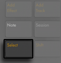
To record notes with the step sequencer, tap the pads in the step sequencer controls to place notes in the clip where you want them. The clip will begin playing as soon as you tap a step. By default, each step sequencer pad corresponds to a 16th note, but you can change the step size via the buttons in the Scene/Grid section.
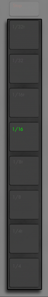
As the clip plays, the currently playing step is indicated by the moving green pad in the step sequencer section. When Record is enabled, the moving pad will be red. Tapping a step that already has a note will delete that note. Press and hold the Mute button while tapping a step to deactivate it without deleting it. Press and hold Solo button while tapping a pad to solo that sound.
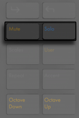
You can also adjust the velocity and micro-timing of individual notes, as described in the section on step sequencing automation.
To delete all notes for a pad, press and hold Delete while tapping the pad. Note that this will only delete notes that are within the current loop.
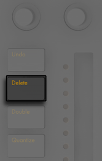
The pad colors in the step sequencer section indicate the following:
- Unlit — this step doesn’t contain a note.
- Blue — this step contains a note. Darker blues indicate higher velocities.
- Dull yellow — this step contains a note, but the note is muted.
- Light Red — the right two columns of pads will turn red if triplets are selected as the step size. In this case, these pads are not active; only the first six pads in each row of steps can be used.
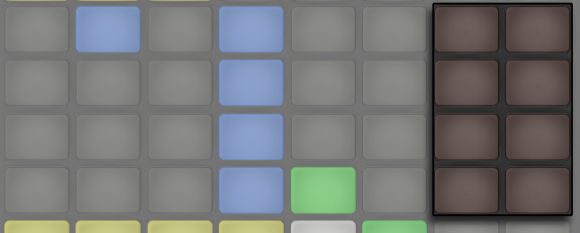
For detailed information about adjusting the loop length pads, see the section called Adjusting the Loop Length.
34.3.6 Real-time Recording
Drum patterns can also be recorded in real-time by playing the Drum Rack pads. Follow these steps to record in real-time:
- If you want to record with a click track, press the Metronome button to enable Live’s built-in click
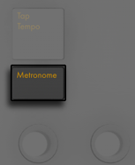
- Then Press the Record button to begin recording
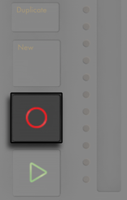
Now any Drum Rack pads you play will be recorded to the clip. Pressing Record again will stop recording but will continue playing back the clip. Pressing Record a third time will enable overdub mode, allowing you to record into the clip while it plays back. Subsequent presses continue to toggle between playback and overdub.
Pressing New stops playback of the currently selected clip and prepares Live to record a new clip on the currently selected track. This allows you to practice before recording a new idea. By default, pressing New also duplicates all clips that are playing on other tracks to a new scene and continues playing them back seamlessly. This behavior can be changed by changing the Workflow mode in Push 1’s User Preferences.
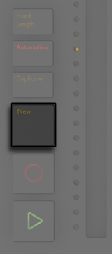
34.3.7 Fixed Length Recording
Press the Fixed Length button to set the size of new clips to a predetermined length.
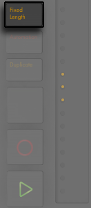
Press and hold Fixed Length to set the recording length.
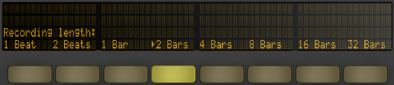
When Fixed Length is disabled, new clips will continue to record until you press the Record, New or Play/Stop buttons.
Enabling Fixed Length while recording will switch recording off and loop the last few bars of the clip, depending on the Fixed Length setting.
34.4 Additional Recording Options
34.4.1 Recording with Repeat
With Push 1’s Repeat button enabled, you can hold down a pad to play or record a stream of continuous, rhythmically-even notes. This is useful for recording steady hi-hat patterns, for example. Varying your finger pressure on the pad will change the volume of the repeated notes.
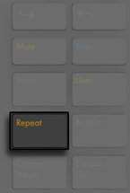
The repeat rate is set with the Scene/Grid buttons. Note that Push 1 “remembers” the Repeat button’s state and setting for each track.
If you press and release Repeat quickly, the button will stay on. If you press and hold, the button will turn off when released, allowing for momentary control of repeated notes.
Turn up the Swing knob to apply swing to the repeated notes. When you touch the knob, the display will show the amount of swing.
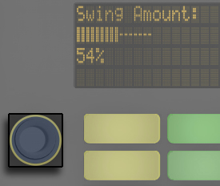
34.4.2 Quantizing
Pressing Push 1’s Quantize button will snap notes to the grid in the selected clip.
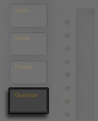
Press and hold Quantize to change the quantization options:
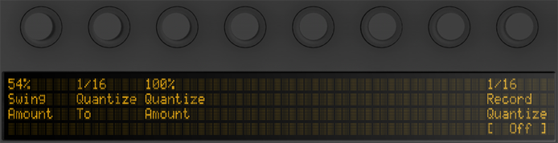
Swing Amount determines the amount of swing that will be applied to the quantized notes. Note that the Swing amount can be adjusted from Encoder 1 or from the dedicated Swing knob.
Quantize To sets the nearest note value to which notes will be quantized, while Quantize Amount determines the amount that notes can be moved from their original positions.
Enable Record Quantize to automatically quantize notes while recording and adjust the record quantization value with Encoder 8. Note that these controls correspond to the settings of the Record Quantization chooser in Live’s Edit menu, and adjustments can be made from Live or from Push 1.
When working with drums, press and hold Quantize and press a Drum Rack pad to quantize only that drum’s notes in the current clip.
34.5 Playing Melodies and Harmonies
After working on a beat, you’ll want to create a new track so that you can work on a bassline, harmony parts, etc. Press the Add Track button to add a new MIDI track to your Live Set.
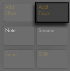
Press and hold the Add Track button to select between Audio, MIDI and Return tracks.
Adding a track puts Push 1 into Browse mode, so you can immediately load an instrument. After loading your instrument, make sure Note Mode is enabled.
Note that when pressing the Add Track button while a track within a Group Track is selected, any new tracks will be inserted into that Group Track.
When working with a MIDI track containing an instrument, Push 1’s 8x8 pad grid automatically configures itself to play notes. By default, every note on the grid is in the key of C major. The bottom left pad plays C1 (although you can change the octave with the Octave Up and Down buttons). Moving upward, each pad is a fourth higher. Moving to the right, each pad is the next note in the C major scale.
Play a major scale by playing the first three pads in the first row, then the first three pads in the next row upwards. Continue until you reach the next C:
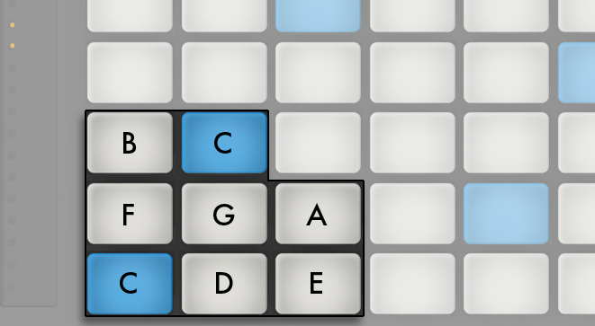
The pad colors help you to stay oriented as you play:
- Blue — this note is the root note of the key (e.g., C).
- White — this note is in the scale, but is not the root.
- Green — the currently-playing note (other pads will also turn green if they play the same note).
- Red — the currently-playing note when recording.
To play triads, try out the following shape anywhere on the grid:
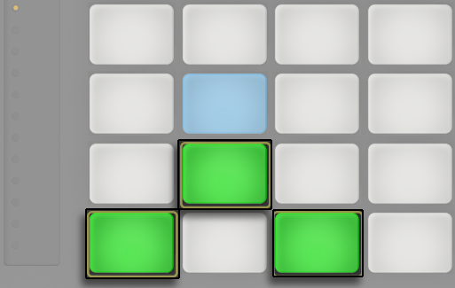
Holding the Note button gives you momentary access to the loop length controls, which appear in the top row of pads. You can lock the loop length controls in place by holding Shift and pressing the Note button. To unlock the loop length pads, press the Note button again.
34.5.1 Playing in Other Keys
Press Push 1’s Scales button to change the selected key and/or scale.
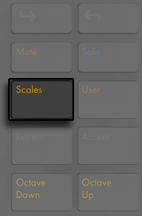
Using the display and the Selection and State Control buttons, you can change the key played by the pad grid. The currently selected key is marked with an arrow in the display:
By default, the pads and scale selection options indicate major scales. You can change to a variety of other scale types using the first encoder, or the two buttons below the display on the far left. The selected scale type is also marked with an arrow.
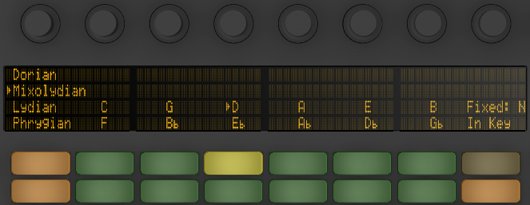
In addition to changing the key, you can also change the layout of the grid using the two buttons on the far right.
Fixed Y/N: When Fixed Mode is on, the notes on the pad grid remain in the same positions when you change keys; the bottom-left pad will always play C, except in keys that don’t contain a C, in which case the bottom-left pad will play the nearest note in the key. When Fixed is off, the notes on the pad grid shift so that the bottom-left pad always plays the root of the selected key.
In Key/Chromatic: With In Key selected, the pad grid is effectively “folded” so that only notes within the key are available. In Chromatic Mode, the pad grid contains all notes. Notes that are in the key are lit, while notes that are not in the key are unlit.
Holding the Shift button while in Scales mode allows you to access a number of additional note layout options.
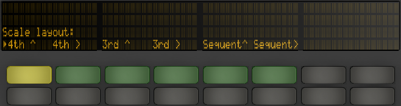
The “4th” and “3rd “options refer to the note interval that the grid is based on, while the ^ and > symbols refer to the rotation of the grid. For example, the default layout is “4th ^” which means that each row of pads is a 4th higher than the row below it. The “4th >” option is also built on 4ths, but now moves to the right rather than upwards; each column is a 4th higher than the column to the left. The “Sequent” options lay out all notes in order. These options are useful if you need a very large range of notes available, because they have no duplicated notes.
The last settings that you chose in the Scale options (key, scale type, In Key/Chromatic, and Fixed Y/N) are saved with the Set. Push 1 will return to these settings when the Set is reloaded again.
All of the real-time recording options available for drums are also available for melodies and harmonies, including fixed length recording, recording with repeat, and quantizing. But for detailed editing, you’ll work with the melodic step sequencer described in the next section.
One editing possibility is available in the real-time Note Mode: to quickly delete all notes of the same pitch within the current loop, press and hold Delete and then tap the respective pad.
34.6 Step Sequencing Melodies and Harmonies
In addition to playing and recording in real time, you can also step sequence your melodies and harmonies. To toggle to the Melodic Sequencer, press the Note Mode button a second time. This will set the 8x8 pad grid as follows:
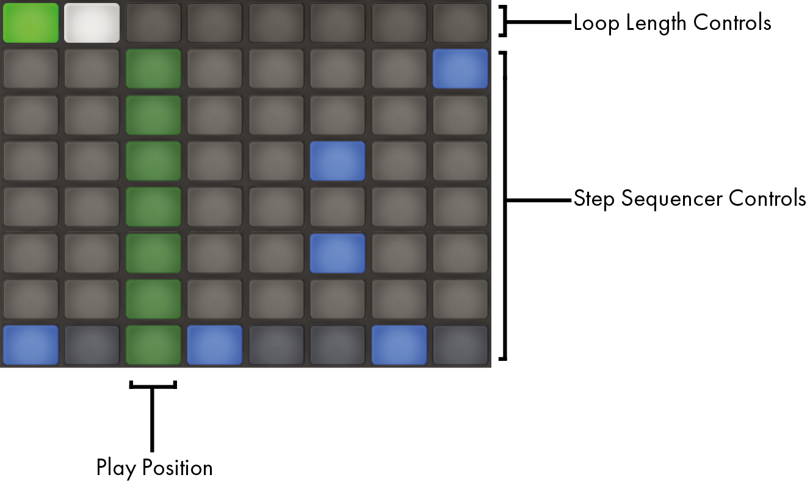
When using the Melodic Sequencer, all eight rows of pads allow you to place notes in the clip. You can adjust the loop length and access additional step sequencing pages via the loop length pads. The loop length pads can be momentarily accessed in the top row while holding the Note button.
You can also lock the loop length pads in place. To do this, hold Shift and tap the Note button. Note that Push 1 remembers this locked/unlocked state for each track. To unlock the loop length pads, press the Note button again.
With In Key selected, each row corresponds to one of the available pitches in the currently selected scale. With Chromatic selected, notes that are in the key are lit, while notes that are not in the key are unlit. The light blue row (which is the bottom row by default) indicates the root of the selected key. Each column of pads represents a step in the resolution set by the Scene/Grid buttons.
As with the real-time playing layout, pressing the Octave Up and Down button shifts the range of available notes. You can also use the touch strip to change the range. Hold the Shift key while adjusting the touch strip or pressing the Octave buttons to fine tune the pitch range. After adjusting the pitch range or when switching between the real-time and step sequencing layouts, the display will briefly show the available range.
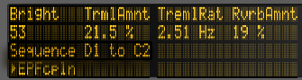
Additionally, brightly-lit touch strip lights indicate the currently available note range, while dimly-lit touch strip lights indicate that the clip contains notes within the corresponding note range.
Pressing Note again will toggle to the Melodic Sequencer + 32 Notes layout.
In addition to adding and removing notes, you can also adjust the velocity and micro-timing of the notes, as described in the section on step sequencing automation.
34.6.1 Adjusting the Loop Length
The loop length controls allow you to set the length of the clip’s loop and determine which part of it you can see and edit in the melodic and drum step sequencers. Each loop length pad corresponds to a page of steps, and the length of a page depends on the step resolution. When working with drums at the default 16th note resolution, two pages of steps are available at a time, for a total of two bars. In the Melodic Sequencer layout, one page of eight steps is available at a time, for a total of two beats. To change the loop length, hold one pad and then tap another pad or, to set the loop length to exactly one page, quickly double-tap the corresponding pad.
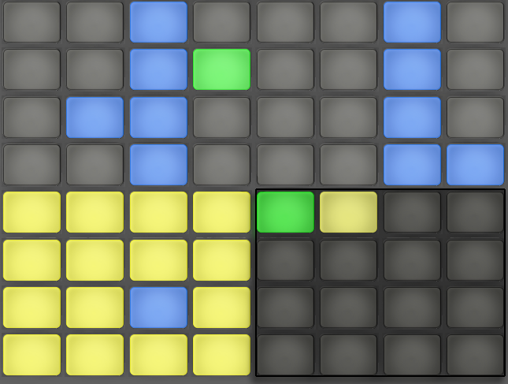
Note that the page you see is not necessarily the page you hear. When you set the loop length, the pages will update so that the current play position (as indicated by the moving green pad in the step sequencer section) always remains visible. But in some cases, you may want to disable this auto-follow behavior. For example, you may want to edit a single page of a longer loop, while still allowing the loop to play for the length you set. To do this, single-tap the pad that corresponds to that page. This will “lock” the view to that page without changing the loop length. To then turn auto-follow back on, simply reselect the current loop. Note that single-tapping a page that is outside of the current loop will immediately set the loop to that page.
The pad colors in the loop length section indicate the following:
- Unlit — this page is outside of the loop.
- White — this page is within the loop, but is not currently visible in the step sequencer section.
- Dull yellow — this page is visible in the step sequencer section, but is not currently playing.
- Green — this is the currently playing page.
If you need to access the loop length pads frequently, you can lock them in place. To do this, hold Shift and tap the Note button. Note that Push 1 remembers this locked/unlocked state for each track. To unlock the loop length pads, press the Note button again.
To duplicate the contents of a sequencer page, hold Duplicate, press the loop length pad for the page you want to duplicate, and press the loop length pad for the destination page. Note that this will not remove existing notes in the destination page, but will add copied notes on top. To remove notes first, hold Delete and tap the loop length pad for that page.
34.7 Melodic Sequencer + 32 Notes
The Melodic Sequencer + 32 Notes layout combines both step sequencing and real-time playing capabilities. Providing access to multiple octaves and steps on a single page, this layout is ideal for figuring out chords and harmonies to sequence. It is also well suited to longer phrases.
34.7.1 32 Notes
The bottom half of the pad grid lets you play notes in real-time, and select them for step sequencing. Each pad corresponds to one of the available pitches in the currently selected scale. Pressing a pad will select and play the note. Selected notes are represented by a lighter version of the track’s color.
To select a pad without triggering it, press and hold the Select button while tapping a pad.
The pad colors indicate the following:
- Blue — this note is the root note of the scale.
- Blue-Green — this pad is selected.
- Green — this pad is currently playing.
- White — this note is in the scale, but is not the root.
Pressing the Octave Up or Down button shifts the range of available notes. Holding the Shift key while adjusting the touch strip shifts the range by octaves. You can hold the Shift key while pressing the Octave buttons to shift by one note in the scale. The display will briefly show the available range as you adjust it.
As with the 64 Notes layout, the notes in the bottom half of the pad grid can be adjusted via the Scale menu.
34.7.2 Sequencer
Tapping a step in the top half of the pad grid adds all selected notes to that step. Steps containing notes are displayed in a blue color.
Holding a step lets you view notes contained within the step, which are indicated in the bottom half of the pad grid by a blue-green color. Tapping any of these selected notes will remove it from the step.
Holding multiple steps will add selected notes to all those steps. While holding Duplicate, you can press a step to copy the notes in that step and then press another step to paste them to a new location in the step sequencer. Note that this will not remove existing notes in the destination page, but will add copied notes on top. To remove notes first, hold Delete and tap the loop length pad for that page.
The pad colors in the step sequencer indicate the following:
- Blue — this step contains a note.
- Green — this step is currently playing.
- White — this step is selected.
- Dull Yellow — this step contains a note, but the note is muted.
- Gray — this pad is empty.
- Light Red — the right two columns of pads will be unlit if triplets are selected as the step size. In this case, these pads are not active; only the first six pads in each row of steps can be used.
When working with the sequencer at the default 16th note resolution, two pages of steps are available at a time, for a total of two bars. You can adjust the loop length and access additional step sequencing pages via the loop length pads. The loop length pads can be momentarily accessed in the fifth row while holding the Note button.
You can also lock the loop length pads in place. To do this, hold Shift and tap the Note button. Note that Push 1 remembers this locked/unlocked state for each track. To unlock the loop length pads, press the Note button again.
To duplicate the contents of a sequencer page, hold Duplicate, press the loop length pad for the page you want to duplicate, and press the loop length pad for the destination page. Note that this will not remove existing notes in the destination page, but will add copied notes on top. To remove notes first, hold Delete and tap the loop length pad for that page.
34.8 Navigating in Note Mode
Now that you’ve created a few tracks, you can continue to add more. But you may want to move between already-existing tracks to continue working on musical ideas using those instruments and devices. The Arrow Keys allow you to do this.
The Left/Right Arrows move between tracks. Note that selecting a MIDI track on Push 1 automatically arms it, so it can be played immediately. In Live, track Arm buttons will appear pink to indicate that they have been armed via selection.

The specific behavior of the Up/Down Arrows is determined by the Workflow mode, which is set in Push 1’s User Preferences. In both modes, the Up/Down Arrows move up or down by a single scene. In Scene Workflow, the selected scene is triggered. In Clip Workflow, only the selected track’s clip is triggered. Clips in other tracks are not affected.
Navigating with the Up/Down Arrows in Note Mode always begins playback immediately, and a triggered clip will take over the play position from whatever clip was played in that track before. Note that this is the same behavior as if the clips were set to Legato Mode in Live.
34.9 Controlling Live’s Instruments and Effects
Pressing the Device button puts Push 1 in Device Mode, which allows Push 1’s encoders to control parameters in Live’s devices.
In Device Mode, the Selection Control buttons select devices in the currently selected track, while the State Control buttons turn the selected device on or off. The currently selected device is marked with an arrow in the display.
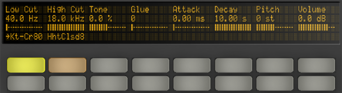
The In and Out buttons allow you to navigate to additional devices and parameters that may not be immediately available.
Use these buttons to access:
- Additional banks of parameters (for effects that have more than one bank of parameters).
- Additional device chains within Racks that contain more than one chain.
34.10 Mixing with Push 1
To control volumes, pans, or sends with the encoders for up to eight tracks simultaneously, press the corresponding button on Push 1. Hold Shift while adjusting the encoders for fine-tune control.
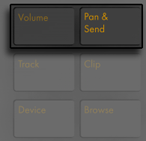
In Volume Mode, the encoders control track volume.
Pressing the Pan & Send button repeatedly will cycle between controlling pans and however many sends are available in your Live Set.
Press Push 1’s Track button to enable Track Mode.
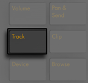
In Track Mode, the encoders control track volume, pan and the first six sends of the selected track. Press the Selection Control buttons to select which track will be controlled in Track Mode.
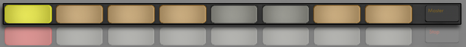
Press the Master button to select the Main track.
Press and hold a Group Track’s Selection Control button to unfold or fold the track.
Note that when Split Stereo Pan Mode is active while in Pan & Send Mode, the display will show the current pan value, but the pan dial will be disabled. In Track Mode, the display will show either the pan control or stereo pan sliders, depending on the active pan mode.
34.11 Recording Automation
Changes that you make to device and mixer parameters can be recorded to your clips as automation, so that the sound will change over time as the clip plays. To record automation, press Push 1’s Automation button.
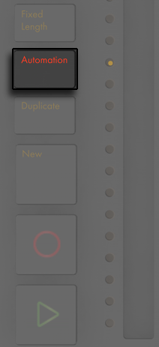
This toggles Live’s Session Automation Arm button, allowing you to record changes you make to Push 1’s encoders as part of the clip. When you’re done recording parameter changes, press the Automation button again to turn it off. To delete the changes you’ve recorded for a particular parameter, press and hold the Delete button and touch the corresponding encoder. If automation hasn’t been recorded for a parameter, holding Delete and touching an encoder will reset the corresponding parameter to its default value.
Automated parameters are shown with a rectangle next to the parameter name in the display. Parameters that you have overridden (by manually adjusting the parameter while not recording) will show their value in brackets.
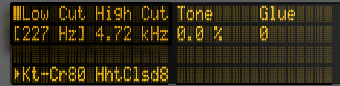
To reenable all automation that you have manually overridden press and hold Shift and press the Automation button.
34.12 Step Sequencing Automation
In both the drum and melodic step sequencers, it’s possible to automate parameters for the selected step.
The parameters that are available will change depending on the display mode you are currently in, as explained in the following sections.
34.12.1 Note-Specific Parameters
When working in any sequencing layout in Clip Mode, you can adjust note settings for each step. To access these settings, simply press and hold a step. The display will switch the controls to the step’s note settings.
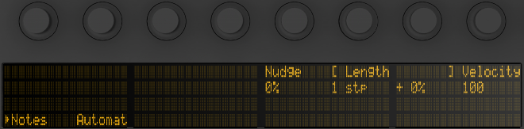
You can then adjust the corresponding encoders in order to:
- Nudge notes backwards or forwards in time. The value represents the percentage that the note is offset from the previous grid line. Negative values indicate that the note occurs before the grid line.
- Adjust the coarse Length of the selected notes.
- Fine-tune the length adjustment of the selected notes
- Change the Velocity of the selected notes.
You can also adjust these note-specific parameters for multiple steps at the same time. To do this, press and hold all of the pads you’d like to adjust, and then tweak the encoders. The display will show the range of values for the selected steps.
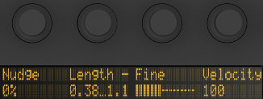
You can also create notes with your desired Nudge, Length, and Velocity values by holding an empty step and then tweaking any of these encoders.
When working with drums, you can adjust nudge, length, and velocity for every note played by a particular pad by pressing and holding the Select button, pressing the pad, and then adjusting the encoders.
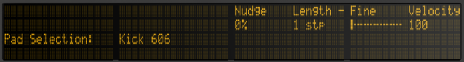
In both the drum and melodic step sequencers, you can copy a step (including all of its note-specific parameters) and paste it to another step. To do this, hold Duplicate and tap the step you’d like to copy. Then tap the destination step and release Duplicate.
34.12.2 Per-Step Automation
When in Device Mode or Volume Mode, hold one or more steps in order to create and edit device or mixer automation for only the selected step(s). While holding a step and tweaking an encoder, the corresponding parameter’s automation value will be adjusted specifically for the time represented by that step. Note that per-step automation can be created for any step, even if that step doesn’t contain notes.
34.13 Controlling Live’s Session View
Press Push 1’s Session button to switch from Note Mode to Session Mode. You can press and hold the Session button to temporarily toggle Session Mode. Releasing the button will then return to Note Mode. Likewise, pressing and holding Note while in Session Mode will temporarily toggle Note Mode.
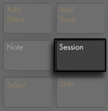
In Session Mode, the 8x8 pad grid will now launch clips and the Scene/Grid Buttons will launch scenes. Pressing a pad triggers the clip in the corresponding location in Live’s Session View. If the track is selected, pressing the button records a new clip.
The pads light up in different colors so you know what’s going on:
- The color of all non-playing clips in your Live Set is reflected on the pads.
- Playing clips pulse green to white.
- Recording clips pulse red to white.
You can stop all music in a track by enabling Stop Mode and pressing that track’s State Control button.
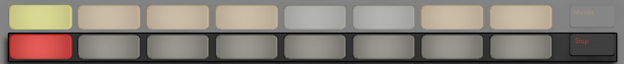
To stop all clips, press and hold Shift, and then press Stop.
Push 1 tells you what’s going on in the software, but, importantly, the software also reflects what’s happening on the hardware. The clip slots currently being controlled by Push 1’s pad grid are shown in Live with a colored border.
The directional arrows and Shift button increase the scope of the eight-by-eight grid.
- Pressing Up or Down moves you up or down one scene at a time. Hold the Shift button while hitting Up or Down to move eight scenes up or down. You can also use the Octave Up and Down buttons to move by eight scenes at a time.
- The Left and Right arrow keys move you left or right one track at a time. Hold the Shift button while hitting Left or Right to move eight tracks at a time.
34.13.1 Session Overview
Push 1’s Session Overview lets you navigate through large Live Sets quickly without looking at your computer screen. Hold down the Shift button and the pad grid zooms out to reveal an overview of your Session View. In the Session Overview, each pad represents an eight-scene-by-eight-track block of clips, giving you a matrix of 64 scenes by 64 tracks. Hit a pad to focus on that section of the Session View. For example, holding the Shift button and then pressing the pad in row three, column one will put the focus on scenes 17-24 and tracks 1-8. Furthermore, while Shift is held, each scene launch button represents a block of 64 scenes, if they are available in your Set.
In the Session Overview, the color coding is a little different:
- Amber: indicates the currently selected block of clips, which will be surrounded by the colored border in the software.
- Green: there are clips playing in that block of clips (though that may not be the block of clips selected).
- Red: there are no clips playing in that range.
- No color: there are no tracks or scenes in that range.
34.14 Setting User Preferences
Press and hold the User button to adjust the sensitivity of Push 1’s velocity response, aftertouch, and other settings.
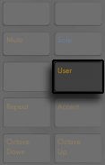
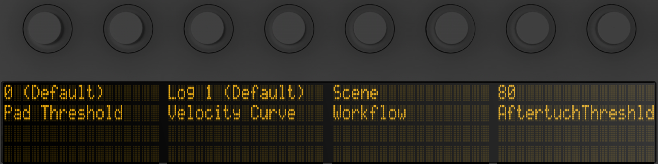
Pad Threshold sets the softest playing force that will trigger notes. More force is required at higher settings. Note that at lower settings, notes may trigger accidentally and pads may “stick” on.
Velocity Curve determines how sensitive the pads are when hit with various amounts of force, and ranges from Linear (a one-to-one relationship between striking force and note velocity) to various logarithmic curves. Higher Log values provide more dynamic range when playing softly. Lighter playing styles may benefit from higher Log values. The diagram below demonstrates the various velocity curves, with striking force on the horizontal axis and note velocity on the vertical axis.
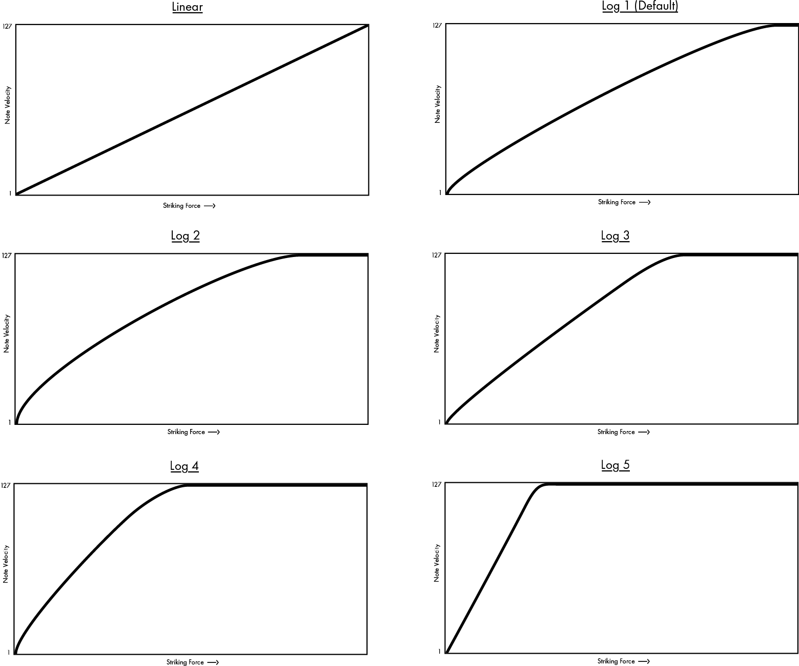
The Workflow option determines how Push 1 behaves when the Duplicate, New, or Up/Down arrow buttons are pressed. Which mode you choose depends on how you like to organize your musical ideas. In Scene Workflow (which is the default), musical ideas are organized and navigated in scenes. In Clip Workflow, you’re working with only the currently selected clip.
In Scene Workflow:
- Duplicate creates a new scene containing all of the currently playing clips, and seamlessly switches to playing them back. This is the same as the Capture and Insert Scene command in Live’s Create menu.
- New is identical to Duplicate, except that it does not duplicate the currently selected clip. Instead, an empty clip slot is prepared, allowing you to create a new idea in the current track.
- The Up/Down Arrows move up or down by a single scene. Playback of the clips in the new scene begins seamlessly.
In Clip Workflow:
- Duplicate creates a copy of the currently selected clip in the next clip slot, while continuing playback of any currently playing clips in other tracks. Hold Shift while pressing Duplicate to create a new scene containing all of the currently playing clips.
- New prepares an empty clip slot on the currently selected track. Clips in other tracks are not affected.
- the Up/Down Arrows move up or down by a single scene. Playback of the currently selected track’s clip in the new scene begins seamlessly. Clips in other tracks are not affected.
Aftertouch Threshold sets the lowest incoming aftertouch value (from 0-127) that Push will register. Input values below this level will be ignored, while input values above this level will be scaled across the entire aftertouch range. For example, if you set the Aftertouch Threshold to 120 and play with an aftertouch value of 119, nothing will happen. But input values between 120 and 127 will be scaled to output a value from 0 to 127, as follows:
120 -> 0
121 -> 18
122 -> 36
123 -> 54
124 -> 72
125 -> 90
126 -> 108
127 -> 127
34.15 Push 1 Control Reference
The function of each section and control is explained below.
34.15.0.1 Focus/Navigation Section
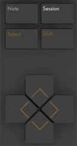
Note Mode — When selected, the Pad Section changes its functionality based on the type of track that is currently selected:
- MIDI track containing an instrument — the pads plays notes. Pressing Note additional times toggles between real-time playing and melodic step sequencing.
- MIDI track containing a Drum Rack — the Pad Section is divided; the lower-left 16 pads play the Drum Rack, the lower-right 16 pads adjust the loop length of the clip, and the upper four rows control the step sequencer. Press Note again to toggle to 64-pad mode, allowing you to play drums across the entire 8x8 pad grid.
Session Mode — When selected, the Pad Section changes to launch clips in Live’s Session View.
Shift — Press and hold Shift while pressing other buttons to access additional functionality.
Arrow Keys — Move through your Live Set (in Session Mode) and between tracks or scenes/clips (in Note Mode).
Select — In Session Mode, hold Select and press a clip to select the clip without launching it. This will also display the clip name in the display. In Note Mode, hold Select and press a Drum Rack pad to select its notes without triggering the pad.
34.15.0.2 Add Section
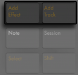
These buttons add new devices or tracks to your Live Set.
Add Effect — Opens Browse Mode to add a new device to the right of the currently selected device. Hold Shift while pressing Add Effect to add the new device to the left of the currently selected device. To add a MIDI Effect, first select the instrument in a track. Then hold Shift while pressing Add Effect.
Add Track — Creates a new MIDI track to the right of the currently selected track. Press and hold Add Track to select a different type of track to add, i.e., Audio, MIDI, or Return. If the Add Track button is pressed while a track within a Group Track is selected, any new tracks will be inserted into that Group Track.
34.15.0.3 Note Section
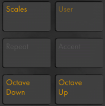
These buttons adjust how notes are played on Push 1.
Scales — When Note Mode is on and an instrument track is selected, pressing this button allows you to select which scale will be played on the pads. Note that this button has no effect when a Drum Rack track is selected or when in Session Mode.
- Fixed Y/N: When Fixed Mode is on, the notes on the pad grid remain in the same positions when you change keys; the bottom-left pad will always play C, except in keys that don’t contain a C, in which case the bottom-left pad will play the nearest note in the key. When Fixed is off, the notes on the pad grid shift so that the bottom-left pad always plays the root of the selected key.
- In Key/Chromatic: With In Key selected, the pad grid is effectively “folded” so that only notes within the key are available. In Chromatic Mode, the pad grid contains all notes. Notes that are in the key are lit, while notes that are not in the key are unlit.
- Scale selection: Select the base scale with the up/down buttons on the lefthand side.
User — All of Push 1’s built-in functionality can be disabled via User Mode. This allows Push 1 to be reprogrammed to control alternate functions in Live or other software. Press and hold the User button to access a number of configuration options. Push 1’s relative encoders work best in “Relative (2’s Comp.)” mode. To ensure this mode is selected, turn the encoder slowly to the left during mapping.
Repeat — When Repeat is enabled, holding down a pad will retrigger the note. The Scene/Grid buttons change the rhythmic value of the repeated note.
Accent — When Accent is enabled, all incoming notes (whether step sequenced or played in real-time) are played at full velocity. Press and hold Accent to temporarily enable it.
Octave Up/Down — If an instrument track is selected, these buttons shift the pads up or down by octave. If a Drum Rack is selected, these buttons shift the Drum Rack’s pad overview up or down by 16 pads. In Session Mode, these buttons shift control of the Session View up or down by eight scenes. These buttons will be unlit if no additional octaves are available.
34.15.0.4 State Control Section
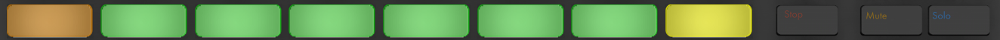
When working with tracks, the leftmost eight buttons will either stop clips or mute or solo the corresponding track, depending on which of the three rightmost buttons is pressed (Stop, Mute, or Solo). When working with devices instead of tracks, the leftmost eight buttons will toggle devices on and off. These buttons have additional functionality in other modes, e.g., scale selection.
To stop all clips, press and hold Shift, and then press Stop.
34.15.0.5 Selection Control Section
These buttons work in conjunction with the Display/Encoder Section buttons and select what parameters can be edited by the encoders and shown in the display. The In and Out buttons allow you to access devices inside Racks or additional parameter banks for devices with more than eight parameters. In Browse Mode, the In and Out buttons shift the display to the right or left, allowing you to browse deeper levels of subfolders or view a larger number of presets on the display.
34.15.0.6 Display/Encoder Section
The six buttons to the right of the display determine the editing mode of the encoders. In all modes, the ninth encoder controls the volume of the Main track, or the Pre-Cue volume if Shift is held. Holding Shift while adjusting any of the first eight encoders allows you to fine-tune whichever parameter is currently being controlled by that encoder. Note that you can temporarily toggle to a different editing mode by pressing and holding the corresponding button. Releasing the button will then return to the previous mode.
In Volume Mode, the encoders control volume of the eight selected tracks.
In Pan & Send Mode, press once to control pans. Subsequent presses cycle through sends.
In Track Mode, the encoders control track volume, pan and the first six sends of the selected track. Select which clip track to control via the eight Selection Control buttons. Press the Master button to select the Main track.
In Clip Mode, the encoders control various parameters for the selected clip. The parameters depend on the type of clip selected:
- Loop Start (or Clip Start if Loop is off)
- Position
- Loop Length (or Clip End if Loop is off)
- Loop On/Off
- Loop Start (or Clip Start if Loop is off)
- Position
- Loop Length (or Clip End if Loop is off)
- Loop On/Off
- Warp Mode
- Detune
- Transpose
- Gain
34.15.0.7 Tempo Section
Tap Tempo — As you press once every beat, the tempo of the Live Set will follow your tapping. If the “Start Playback with Tap Tempo” button is enabled in Live’s Record, Warp & Launch Settings, you can also use tapping to count in: If you are working in a 4/4 signature, it takes four taps to start song playback at the tapped tempo.
Metronome — Toggles Live’s metronome on or off.
The left encoder adjusts Live’s tempo in increments of one BPM. Holding Shift while adjusting will set the tempo in increments of .1 BPM.
The right encoder sets the amount of swing applied when Quantizing, Record Quantizing or when Repeat is pressed.
34.15.0.8 Edit Section
Undo — Undoes the last action. Press and hold Shift while pressing Undo to Redo. Note that Push 1’s Undo button applies Live’s Undo functionality, so it will undo actions in your Live Set even if they were done without using Push 1.
Delete — In Note Mode, this button deletes the selected clip. In Session Mode, hold Delete and then press a clip to delete that clip. Hold Delete and select a device or track with Push 1’s Selection Control buttons to delete. Hold Delete and touch an encoder to delete automation controlled by that encoder. If automation has not been recorded for a particular parameter, holding Delete and touching the corresponding encoder will reset that parameter to its default value.
Quantize — Press and release to quantize the selected notes (or all notes in the clip if there is no selection). Hold Quantize and press a drum pad to quantize that pad’s notes. For audio clips, Quantize will affect transients. Press and hold Quantize to access quantization settings. After changing these settings, press once to exit and then press and release to apply your changes.
Double — doubles the material within the loop, as well as the length of the loop.
34.15.0.9 Transport Section
Fixed Length — When enabled, all newly created clips will be a fixed number of bars. When disabled, new clips will continue to record until you press the Record, New or Play/Stop buttons. Press and hold, then use the buttons beneath the display to specify the fixed recording length. Enabling Fixed Length while recording will switch recording off and loop the last few bars of the clip, depending on the Fixed Length setting.
Automation — Toggles Live’s Automation Record button. When on, your parameter changes will be recorded into playing Session View clips. Hold Shift and press Automation to reenable any automation that you have overridden. Hold Delete and press the Automation button to delete all automation in a clip.
Duplicate — In Scene Workflow, Duplicate creates a new scene containing all of the currently playing clips. In Clip Workflow, Duplicate creates a copy of the currently selected clip in the next clip slot, while continuing playback of any currently playing clips in other tracks. Hold Duplicate while pressing a Drum Rack pad to copy the pad and paste it to a new location in the Drum Rack.
New — Pressing New stops the selected clip and prepares Live to record new material. This allows you to practice before making a new recording. On armed MIDI tracks, holding Record while pressing New triggers Capture MIDI.
Record — Press the Record button to begin recording. Pressing Record again will stop recording but will continue playing back the clip. Pressing Record a third time will enable overdub mode, allowing you to record into the clip while it plays back.
Play/Stop — Toggles the play button in Live’s Control Bar. Hold Shift while pressing Play/Stop to return Live’s transport to 1.1.1 without starting playback.
34.15.0.10 Touch Strip
When an instrument track is selected, the touch strip adjusts pitch bend or modulation wheel amount when playing in real-time, or the available range of notes when step sequencing. When a Drum Rack track is selected, the touch strip selects the Drum Rack bank.
Pitch bend is selected by default when an instrument track is selected. To change the functionality of the touch strip, hold Select and tap the strip. This toggles between pitch bend and mod wheel functionality each time you tap it. The display will briefly show the current mode each time you change it. Note that pitch bend and modulation wheel functionality is only available when playing instruments in real time, and not when using the melodic step sequencers.
34.15.0.11 Pad Section
The functionality of the Pad Section is determined by the Note and Session Mode buttons. When Session Mode is on, the Pad Section is used to launch clips in Live’s Session View. When Note Mode is on, the Pad Section changes its functionality based on the type of track that is currently selected:
- MIDI track containing an instrument — the pads plays notes. Pressing Note additional times toggles between real-time playing and melodic step sequencing.
- MIDI track containing a Drum Rack — the Pad Section is divided; the lower-left 16 pads play the Drum Rack, the lower-right 16 pads adjust the loop length of the clip, and the upper four rows control the step sequencer. Press Note again to toggle to 64-pad mode, allowing you to play drums across the entire 8x8 pad grid.
34.15.0.12 Scene/Grid Section
These buttons also change their functionality depending on whether Session Mode or Note Mode is selected. When Session Mode is selected, these buttons launch Session View scenes. Hold the Select button while pressing a Scene button to select the scene without launching it. When Note Mode is selected, the Scene/Grid Section determines the rhythmic resolution of the step sequencer grid and the rhythmic resolution of repeated notes when Repeat is enabled.
34.15.0.13 Using Footswitches with Push 1
Two ports on the back of Push 1 allow you to connect momentary footswitches. Footswitch 1 acts as a sustain pedal. Footswitch 2 gives you hands-free control of Push 1’s recording functionality. A single tap of the footswitch will toggle the Record button, thus switching between recording/overdubbing and playback of the current clip. Quickly double-tapping the footswitch is the same as pressing the New button.
Note that certain footswitches may behave “backwards”; for example, notes may sustain only when the pedal is not depressed. Footswitch polarity can usually be corrected by connecting the footswitch to the port while depressing it, but we recommend using footswitches with a physical polarity switch.